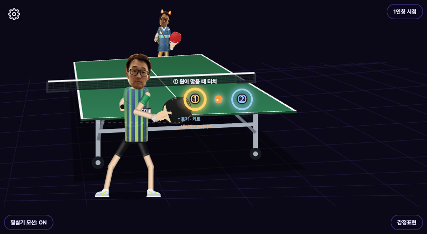
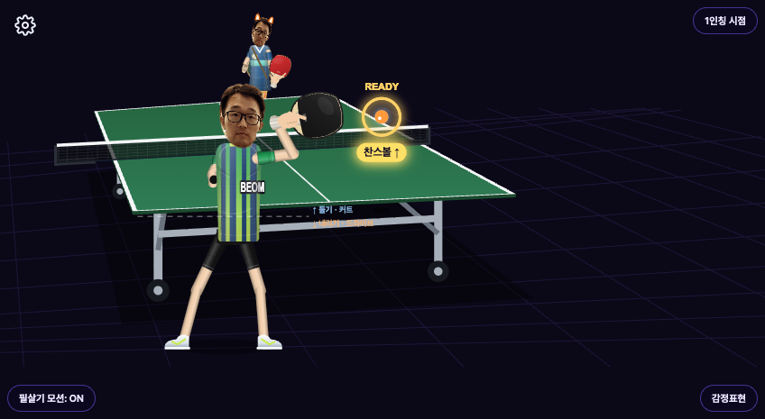

화면을 읽으면 실점 원인이 보입니다
공을 눌렀는데 실패했다면 타구 종류, 타이밍, 위치를 차례로 확인하세요. 아래는 현재 게임의 캐릭터·탁구대·공·타이밍 링을 실제 렌더러로 그린 화면입니다. 설명을 위해 공 위치를 고정한 재현 장면이며 실제 사용자의 승리 기록이나 성공 입력을 촬영한 자료는 아닙니다. 노란 네모는 공략 페이지에 추가한 강조 표시입니다.
1. 타이밍 링: 공 위치와 입력 순간을 함께 확인

일반 공은 내 쪽에 한 번 바운드한 뒤 타격합니다. READY와 PERFECT, LATE는 입력 순간의 구분입니다. 위치를 잘 맞춰도 늦게 눌렀다면 원하는 판정을 얻지 못할 수 있습니다. 반대로 타이밍이 좋아도 공에서 너무 먼 곳을 누르면 타격 범위 밖입니다.
반복해서 공을 놓친다면 먼저 같은 위치를 연속 터치하고 있는지 확인하세요. 공의 이동 방향에 맞춰 손을 옮긴 뒤 타이밍을 맞추는 순서로 연습합니다.
2. 투터치: 첫 입력과 두 번째 입력의 위치가 다릅니다

첫 원을 성공했는데 두 번째가 실패한다면 첫 입력 위치를 그대로 다시 누르는지, 두 번째 입력이 너무 빠른지 확인하세요. 크게 드래그하면 단순 터치와 다른 입력이 될 수 있으므로 투터치 연습에서는 짧고 분명한 두 입력을 먼저 익히는 편이 좋습니다. 이 장면은 첫 번째 입력 전 상태만 보여 줍니다.
투터치의 박자는 일반 공의 비행 시간과 같은 개념이 아닙니다. 실제 경기에서 두 번째 원의 표시를 확인하세요. 자동 입력이나 무작정 빠른 연타로 성공을 보장할 수 없습니다.
3. 찬스볼: 원래 드라이브였어도 높게 뜨면 공격 기회

상대가 드라이브를 시도했더라도 미스로 공이 높게 뜨면 찬스 스매시로 공격할 수 있습니다. 일반적으로 아래에서 위로 스윙하는 입력을 활용하지만 캐릭터 특성에 따라 결과가 달라질 수 있습니다. 타구의 이전 이름만 보고 스매시를 포기하기보다 지금 공이 찬스 상태인지 확인하세요.
실점 문구로 다음 연습을 정하기
- 두 번 바운드
- 짧은 공이 끝선 밖으로 나오기를 기다렸는지 확인하세요. 짧은 공은 테이블 위에서 받아야 합니다.
- 네트 또는 아웃
- 타이밍 결과와 상대 공 종류를 함께 봅니다. 입력 방향이 맞지 않는 경우와 회전에 밀린 경우를 구분해야 합니다. 같은 입력이 언제나 같은 성공률을 갖는 것은 아닙니다.
- 공을 놓침
- 손의 위치가 타격 지점을 따라갔는지, 이미 타격 구간을 지난 뒤 입력했는지 확인하세요.
- 캐릭터가 사라짐·점수 갱신 중단
- 정상적인 타이밍 실패와 다른 현상입니다. 모드와 캐릭터, 직전 입력을 적어 오류로 신고해 주세요.
일반공과 투터치 공의 이동 예시
소리 없는 짧은 시연입니다. 앞부분은 일반공, 뒷부분은 투터치 표시가 있는 공을 같은 초기 조건으로 이동시킵니다. 현재 게임의 물리 함수와 렌더러를 사용하되 느리게 고정 간격으로 진행한 교육용 재현이므로 실제 경기 속도나 성공 장면을 뜻하지 않습니다. 영상 없이도 위의 이미지·본문으로 내용을 확인할 수 있습니다.